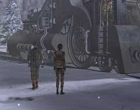
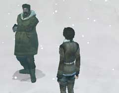

緊急脱出装置
・緊急脱出装置の使い方は分かるか? ・脱出装置は座標を入力しないと役に立たない。座標は分かるか? ・座標に関係する装置は近くにあったか?
オスカー
 ・オスカーはどこにいるか? ・オスカーの体調不良はどうしたら治すことができるか? ・オスカーの要求はどのようなものか?
弟
 ・彼はどこにいるか? ・彼の兄はどこにいるか? 彼は何を知っているか? ・彼は何かを恐れている。それは何か?
兄
・どうすればこの状況から脱出できるか? ・あなたが取ることのできる行動にはどのようなものがあるか? ・制限時間はない。ゆっくりと探してみよう。
| << 戻る |
|